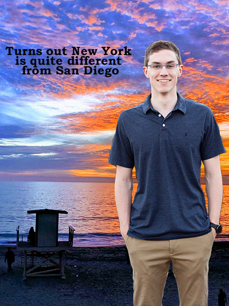

Background

I am pursuing a double major, studying both broadcast journalism and data analytics. I am interested in conducting broadcast research on linear TV cable networks.
To this end, I have become experienced using Microsoft Excel, R, Shiny Apps, and other interactive tools to leverage data and find the stories beyond just the TV ratings.
In the past I have worked on various projects, including:
- Nielsen Delivery Analysis
- Built and hosted an interactive and responsive Shiny web app to compare and rank past and current Nielsen deliveries between different cable networks across multiple demographics.
- Twitter Sentiment Analysis
- Developed a tool to run user-defined search terms and compare the sentiment of more than 15k tweets across three different lexicon libraries.
- Exploratory Data Analysis
- Discovered and presented trends across F1 results over the last 70 years of racing using the Tidyverse.
Personal Info
Outside of work, I can often be found playing water polo, bodysurfing at the beach, reminiscing about moving to the opposite coast, or slipping ‘Seinfeld’ references into normal conversation.